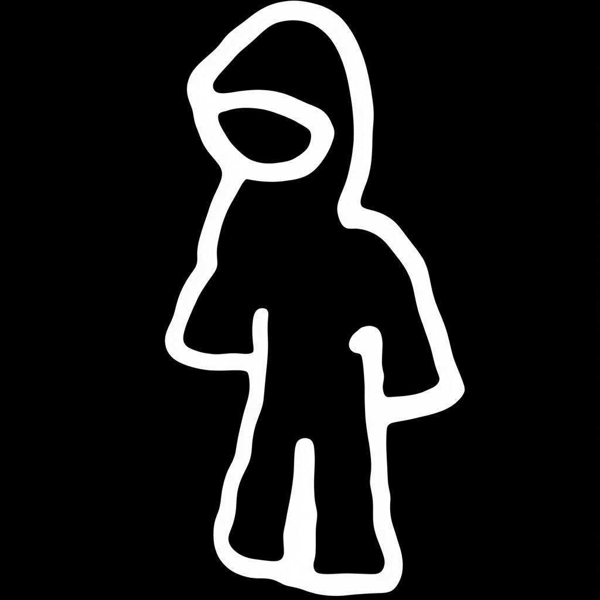

NSS Radio
Marine moods from the Irish Sea · アイリッシュ海からのマリンムード
listen
/
about
/
contact
Ko-fi
♪
Loading…
Please wait
On air
0:00
0:00
Spotify
Apple Music
Share
Copy stream
Backup
–
listeners
–
kbps
history
履歴
show more
schedule
番組表
→ full schedule
videos
動画
Loading videos…
→ latest videos